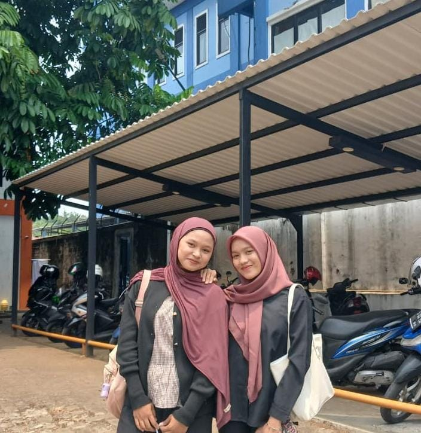
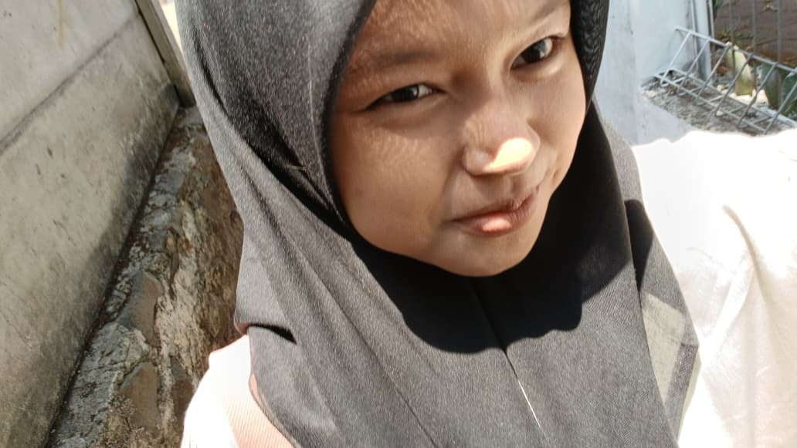
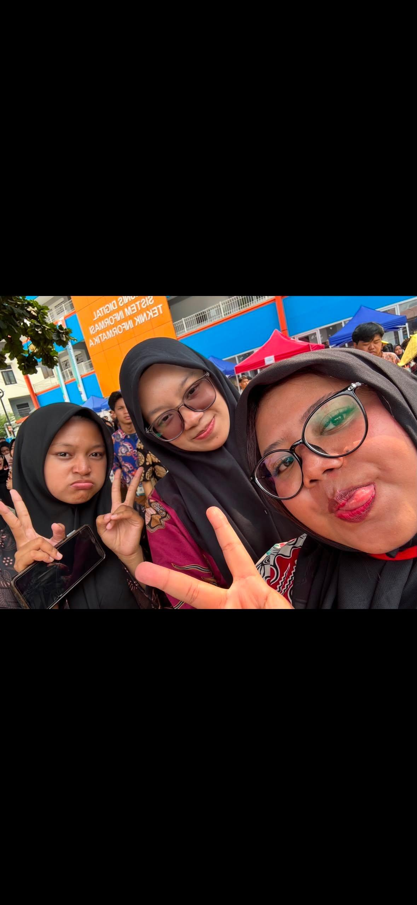

Bogor
STT Terpadu Nurul Fikri
Depok, Jawa Barat 16424
Email: sitirahmapeb@gmail.com
Telephone: 0856-9120-9012
Saya adalah orang yang masih terus belajar untuk menjadi pribadi yang lebih baik. Saya senang mencoba hal-hal baru dan ingin mendapatkan banyak pengalaman. Saya juga termasuk orang yang peduli dengan orang-orang di sekitar saya. Bagi saya, setiap orang punya prosesnya masing-masing, jadi saya ingin terus berkembang tanpa harus membandingkan diri dengan orang lain.
Saya memiliki keinginan untuk menjadi pribadi yang lebih mandiri, percaya diri, dan bertanggung jawab. Terkadang saya masih merasa ragu dengan diri sendiri, tetapi saya ingin terus belajar untuk mengatasi hal tersebut. Saya juga ingin menjadi orang yang bisa membanggakan orang tua, bermanfaat bagi orang lain, dan tetap berpegang pada nilai-nilai agama dalam kehidupan sehari-hari.


